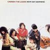

Celtic Lyrics Corner > Artists & Groups > Cherish The Ladies > New Day Dawning > Keg Of Brandy
|  | Keg Of Brandy |
| Credits : | Traditional |
| Appears On : | New Day Dawning |
| Language : | English |
| Other Versions : | " The Keg Of Brandy " on Karan Casey's album Chasing The Sun |
Lyrics :
I'm always drunk and I'm seldom sober
A constant roving from town to town
Ah but I'm old now, my sporting's over
So Molly, a stór, won't you lay me down?
Just lay my head on a keg of brandy
It is my fancy, I do declare
For while I'm drinking, I'm always thinking
On lovely Molly from the County Clare
The ripest apple is the soonest rotten
And the warmest love is the soonest cold
And a young man's fancies are soon forgotten
Beware, young maids, and don't make so bold
Just lay my head on a keg of brandy
It is my fancy, I do declare
For while I'm drinking, I'm always thinking
On lovely Molly from the County Clare
For it's youth and folly make young men marry
And makes them tarry along the day
What can't be cured, love, must be endured, love
So farewell, darling, I'm going away